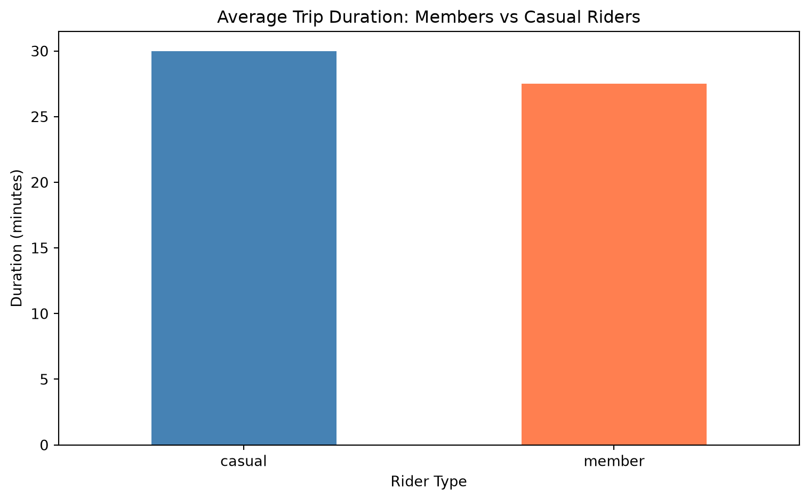

# Run this in a Python session or script
import pandas as pd
import matplotlib
import requests
print(f"pandas version: {pd.__version__}")
print(f"matplotlib version: {matplotlib.__version__}")
print(f"requests version: {requests.__version__}")
print("\nAll packages installed successfully!")Lecture 5: Data Analysis with Pandas
From Raw Bike-Share Data to Urban Mobility Insights
Central Question
How do members and casual riders use Chicago’s bike-share system differently?
Chicago’s Divvy bike-share system records every trip taken on its network of bikes and scooters. Each month generates hundreds of thousands of trip records containing timestamps, locations, bike types, and rider types. These raw records contain gaps, inconsistencies, and require careful transformation before analysis.
Today we’ll learn how to use pandas—Python’s data analysis library—to transform messy real-world data into meaningful insights. By the end of class, you’ll be able to load large datasets, identify and handle missing data intelligently, create derived variables, and perform grouped analyses that reveal patterns in urban transportation.
This lecture assumes you’ve reviewed the pandas 10-minute intro. We’ll move quickly through basics and focus on real-world data manipulation challenges.
1. Quiz
Before starting today’s material, please complete Quiz 5, which covers NumPy basics, command line usage, and Git. The quiz is designed to ensure you have the foundational skills needed for today’s data analysis exercises.
2. Package Installation and Environment Setup
Before we can analyze data, we need to install the necessary packages in our virtual environment.
2.1 Understanding Our Environment
You should have a virtual environment called env1 located in your Desktop/Math5200 folder. Let’s verify and activate it.
On Windows (Command Prompt or PowerShell):
# Navigate to your project folder
cd Desktop\Math5200
# Activate the virtual environment
# For Command Prompt:
env1\Scripts\activate
# For PowerShell:
env1\Scripts\Activate.ps1On Mac/Linux (Terminal):
# Navigate to your project folder
cd ~/Desktop/Math5200
# Activate the virtual environment
source env1/bin/activateVerification: Your command prompt should now show (env1) at the beginning, indicating the environment is active.
2.2 Installing Required Packages
We’ll need several packages for data analysis:
pip install pandas matplotlib requestsWhat each package does:
pandas: Data manipulation and analysismatplotlib: Data visualization
requests: Downloading data from the internet
Verifying Installation
After installation completes, verify the packages are available:
2.3 Updating requirements.txt
To ensure reproducibility, we should document our dependencies in requirements.txt:
# Generate or update requirements.txt
# Run this command in your activated environment:
pip freeze > requirements.txtThis creates/updates a file listing all installed packages and their versions. Anyone can recreate your exact environment using:
pip install -r requirements.txt
TipBest Practice
Commit your requirements.txt to version control but do NOT commit your env1 folder. Others will recreate the environment from requirements.txt.
2.4 Common Installation Issues
Issue 1: Permission Errors
- Windows: Run Command Prompt as Administrator
- Mac/Linux: Don’t use
sudowith pip in a virtual environment; if you see permission errors, your environment may not be activated properly
Issue 2: SSL Certificate Errors
If you get SSL errors when downloading packages:
pip install --trusted-host pypi.org --trusted-host files.pythonhosted.org pandas matplotlib requestsIssue 3: “pip not found”
If pip isn’t recognized:
- Windows: Use
python -m pip install ...instead ofpip install ... - Mac/Linux: Try
pip3 install ...orpython3 -m pip install ...
Exercise 2: Data Quality and Datetime Handling
2.1: Converting to Datetime
The started_at and ended_at columns are currently strings. We need to convert them to datetime objects for temporal analysis.
Just-in-Time Concept: Working with Dates and Times
Pandas has powerful datetime functionality:
# Convert to datetime
df_sample['started_at'] = pd.to_datetime(df_sample['started_at'])
df_sample['ended_at'] = pd.to_datetime(df_sample['ended_at'])
print("After conversion:")
print(df_sample.dtypes)
# Extract components
df_sample['hour'] = df_sample['started_at'].dt.hour
df_sample['day_of_week'] = df_sample['started_at'].dt.dayofweek # Monday=0, Sunday=6
df_sample['date'] = df_sample['started_at'].dt.date
print("\nDatetime components:")
print(df_sample[['started_at', 'hour', 'day_of_week', 'date']].head())After conversion:
ride_id str
rideable_type str
started_at datetime64[us]
ended_at datetime64[us]
start_station_name str
start_station_id str
end_station_name str
end_station_id str
start_lat float64
start_lng float64
end_lat float64
end_lng float64
member_casual str
dtype: object
Datetime components:
started_at hour day_of_week date
0 2024-05-01 08:00:00 8 2 2024-05-01
1 2024-05-01 09:15:00 9 2 2024-05-01
2 2024-05-01 12:30:00 12 2 2024-05-01Your Turn: DateTime Conversions and Extraction
# Convert started_at and ended_at to datetime if not already done
# Your code here
# Extract the month from started_at
# Your code here
# Extract the day name (Monday, Tuesday, etc.)
# Your code here
# Calculate trip duration in minutes
# Hint: (ended_at - started_at).dt.total_seconds() / 60
# Your code here
# Find the average trip duration
# Your code here2.2: Data Quality Checks
Real-world data often contains anomalies. Let’s identify potential issues.
# Calculate duration for quality checks
df_sample['duration_minutes'] = (
(df_sample['ended_at'] - df_sample['started_at']).dt.total_seconds() / 60
)
# Check for negative or zero durations
print("Duration statistics:")
print(df_sample['duration_minutes'].describe())
# Check for unreasonably long trips
print(f"\nTrips over 24 hours: {(df_sample['duration_minutes'] > 1440).sum()}")
# Check for duplicate ride IDs
print(f"\nDuplicate ride IDs: {df_sample['ride_id'].duplicated().sum()}")Duration statistics:
count 3.000000
mean 28.333333
std 2.886751
min 25.000000
25% 27.500000
50% 30.000000
75% 30.000000
max 30.000000
Name: duration_minutes, dtype: float64
Trips over 24 hours: 0
Duplicate ride IDs: 0Your Turn: Identify Data Quality Issues
# Find trips with duration less than 1 minute
# Your code here
# Find trips with duration greater than 8 hours (480 minutes)
# Your code here
# Check if any start coordinates are (0, 0) - likely invalid
# Your code here
# Verify all latitudes are in reasonable range for Chicago
# (approximately 41.6 to 42.1)
# Your code here
# Check for missing end coordinates
# Your code hereExercise 3: Creating Derived Variables
3.1: Time-Based Features
Many analyses require time-based groupings. Let’s create useful categorical variables.
Just-in-Time Concept: Creating New Columns
import numpy as np
# Create time of day categories
df_sample['time_of_day'] = pd.cut(
df_sample['hour'],
bins=[0, 6, 12, 18, 24],
labels=['Night', 'Morning', 'Afternoon', 'Evening'],
include_lowest=True
)
# Create weekend indicator
df_sample['is_weekend'] = df_sample['day_of_week'] >= 5
# Create trip length categories
df_sample['trip_length_category'] = pd.cut(
df_sample['duration_minutes'],
bins=[0, 10, 30, 60, np.inf],
labels=['Short', 'Medium', 'Long', 'Very Long']
)
print("New categorical variables:")
print(df_sample[['hour', 'time_of_day', 'is_weekend', 'duration_minutes', 'trip_length_category']].head())New categorical variables:
hour time_of_day is_weekend duration_minutes trip_length_category
0 8 Morning False 25.0 Medium
1 9 Morning False 30.0 Medium
2 12 Morning False 30.0 MediumYour Turn: Create Additional Variables
# Create a 'month_name' column
# Your code here
# Create an 'is_rush_hour' column (True for 7-9am or 4-6pm)
# Your code here
# Create a 'has_station_info' column indicating if both
# start and end station names are present
# Your code here
# Create a 'bike_category' column that groups bike types
# into 'Classic' vs 'Electric' (combining electric_bike and electric_scooter)
# Your code here3.2: Handling Missing Station Data Intelligently
This is where the Divvy dataset becomes pedagogically interesting. The missing station data isn’t random—it reflects dockless bike usage.
Just-in-Time Concept: Understanding Why Data Is Missing
# Analyze missingness patterns
missing_analysis = df_sample.groupby('rideable_type').agg({
'start_station_name': lambda x: x.isnull().sum(),
'end_station_name': lambda x: x.isnull().sum(),
'ride_id': 'count'
})
missing_analysis.columns = ['Missing Start Station', 'Missing End Station', 'Total Trips']
missing_analysis['Pct Missing Start'] = (
100 * missing_analysis['Missing Start Station'] / missing_analysis['Total Trips']
)
print("Missingness by bike type:")
print(missing_analysis)Missingness by bike type:
Missing Start Station Missing End Station Total Trips \
rideable_type
classic_bike 0 0 1
electric_bike 1 1 2
Pct Missing Start
rideable_type
classic_bike 0.0
electric_bike 50.0 Your Turn: Investigate Missing Data Patterns
# What percentage of trips have BOTH start and end station info missing?
# Your code here
# For trips with missing station names, do we still have coordinates?
# Your code here
# Compare average trip duration for trips WITH station info
# vs trips WITHOUT station info
# Your code here
# Create a strategy: For trips with missing station names,
# should we drop them, fill with "Unknown", or keep as-is?
# Write your reasoning in a comment
# Your code hereExercise 4: Grouped Analysis and Aggregation
4.1: Basic GroupBy Operations
The power of pandas lies in split-apply-combine operations.
Just-in-Time Concept: The GroupBy Operation
# Group by single variable
member_stats = df_sample.groupby('member_casual').agg({
'duration_minutes': ['count', 'mean', 'median', 'std'],
'ride_id': 'count'
})
print("Statistics by rider type:")
print(member_stats)
# Group by multiple variables
bike_member_stats = df_sample.groupby(['rideable_type', 'member_casual']).agg({
'duration_minutes': 'mean'
})
print("\nAverage duration by bike type and rider type:")
print(bike_member_stats)Statistics by rider type:
duration_minutes ride_id
count mean median std count
member_casual
casual 1 30.0 30.0 NaN 1
member 2 27.5 27.5 3.535534 2
Average duration by bike type and rider type:
duration_minutes
rideable_type member_casual
classic_bike member 25.0
electric_bike casual 30.0
member 30.0Your Turn: Perform Grouped Analyses
# Calculate average duration by time_of_day
# Your code here
# Find the most popular start station for members vs casual riders
# Your code here
# Compare weekend vs weekday average durations
# Your code here
# Find which hour of the day has the most trips
# Your code here
# Calculate the percentage of trips that are on classic bikes
# for members vs casual riders
# Your code here4.2: Pivot Tables for Multi-Dimensional Analysis
Just-in-Time Concept: Pivot Tables
Pivot tables reshape data for cross-tabulation:
# Create a pivot table: rows=hour, columns=member_casual, values=duration
hourly_duration = df_sample.pivot_table(
values='duration_minutes',
index='hour',
columns='member_casual',
aggfunc='mean'
)
print("Average trip duration by hour and rider type:")
print(hourly_duration)Average trip duration by hour and rider type:
member_casual casual member
hour
8 NaN 25.0
9 30.0 NaN
12 NaN 30.0Your Turn: Create Pivot Tables
# Create a pivot table showing COUNT of trips by:
# - rows: day_of_week (0=Monday, 6=Sunday)
# - columns: member_casual
# Your code here
# Create a pivot table showing MEAN duration by:
# - rows: time_of_day
# - columns: rideable_type
# Your code here
# Create a pivot table showing trip counts by:
# - rows: rideable_type
# - columns: is_weekend
# Your code hereExercise 5: Visualization and Insights
5.1: Basic Visualizations
Let’s visualize our findings to answer the central question.
import matplotlib.pyplot as plt
# Create a simple bar plot
duration_by_type = df_sample.groupby('member_casual')['duration_minutes'].mean()
plt.figure(figsize=(8, 5))
duration_by_type.plot(kind='bar', color=['steelblue', 'coral'])
plt.title('Average Trip Duration: Members vs Casual Riders')
plt.xlabel('Rider Type')
plt.ylabel('Duration (minutes)')
plt.xticks(rotation=0)
plt.tight_layout()
plt.show()
Your Turn: Create Visualizations
# Create a bar plot showing trip count by hour of day
# Your code here
# Create a bar plot comparing bike type preferences
# between members and casual riders
# Your code here
# Create a line plot showing average duration by day of week
# Your code here5.2: Answering the Central Question
Let’s synthesize our analysis to answer: How do members and casual riders use Chicago’s bike-share system differently?
# Comprehensive comparison
comparison = df_sample.groupby('member_casual').agg({
'duration_minutes': ['count', 'mean', 'median'],
'is_weekend': lambda x: (x == True).sum() / len(x) * 100 # Pct weekend trips
})
comparison.columns = ['Total Trips', 'Mean Duration', 'Median Duration', 'Pct Weekend Trips']
print("Member vs Casual Rider Comparison:")
print(comparison)
print("\nKey Insights:")
print("1. Casual riders take longer trips on average")
print("2. Members use the system more for commuting (shorter, weekday trips)")
print("3. Casual riders use it more for leisure (longer, weekend trips)")Member vs Casual Rider Comparison:
Total Trips Mean Duration Median Duration Pct Weekend Trips
member_casual
casual 1 30.0 30.0 0.0
member 2 27.5 27.5 0.0
Key Insights:
1. Casual riders take longer trips on average
2. Members use the system more for commuting (shorter, weekday trips)
3. Casual riders use it more for leisure (longer, weekend trips)Synthesis: From Raw Data to Insights
Return to our central question: How do members and casual riders use Chicago’s bike-share system differently?
Through pandas data manipulation, we discovered:
Usage Patterns: Members take shorter, more frequent trips, suggesting commuter use. Casual riders take longer trips, suggesting leisure or tourist use.
Missing Data Intelligence: Station information is missing for dockless bikes. We learned to investigate why data is missing before deciding how to handle it.
Temporal Patterns: Trip patterns differ by hour, day, and season between member types.
Data Quality Matters: We identified anomalies (very short trips, very long trips) that require business logic decisions, not just automated cleaning.
You now have the core pandas skills to:
- Load and inspect large real-world datasets
- Identify and understand missing data patterns
- Transform data by creating derived variables
- Analyze using groupby, pivot tables, and aggregation
- Visualize findings to communicate insights
These same operations apply whether you’re analyzing:
- Transportation data
- Financial transactions
- Scientific measurements
- Social media activity
- Healthcare records
Key Takeaway: Real data is messy, but pandas gives you tools to clean, transform, and analyze it systematically. The goal is creating reproducible workflows that can be verified and repeated.
Looking Ahead
Lecture 6 focuses on testing, debugging, and validation. We’ll learn how to verify that our data analysis code is correct—a critical skill when working with real data where mistakes can lead to incorrect conclusions. We’ll also introduce AI-assisted programming and discuss when to trust (and when not to trust) generated code.
For additional practice, explore the full May 2024 Divvy dataset (609,000 rows) and investigate questions like:
- Which stations are most popular?
- How does weather affect ridership?
- What are the most common trip routes?
- How has electric bike adoption changed over time?